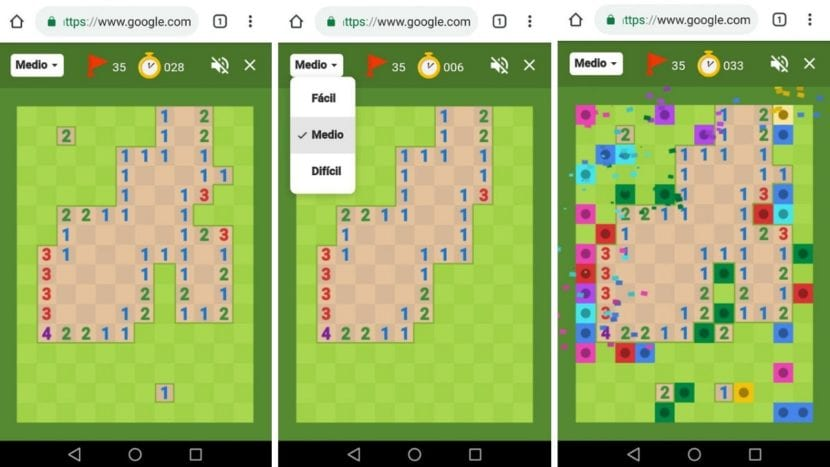
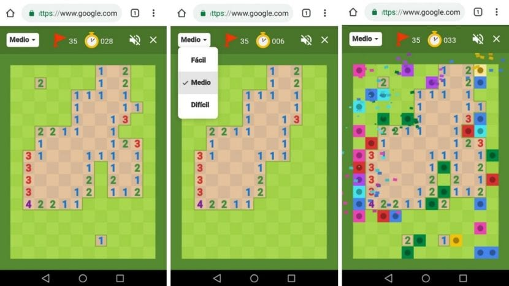

Buscaminas
El Buscaminas es un juego de lógica en el que el objetivo es despejar un campo minado sin detonar ninguna mina, utilizando pistas numéricas para localizar las minas.
| Nom | Valoració | Comentari |
|---|---|---|
| Laura | 5 | Juego clásico que siempre engancha. |
| Sofía | 3 | Cuando llevas 10 partidas, se vuelve aburrido. |


 
